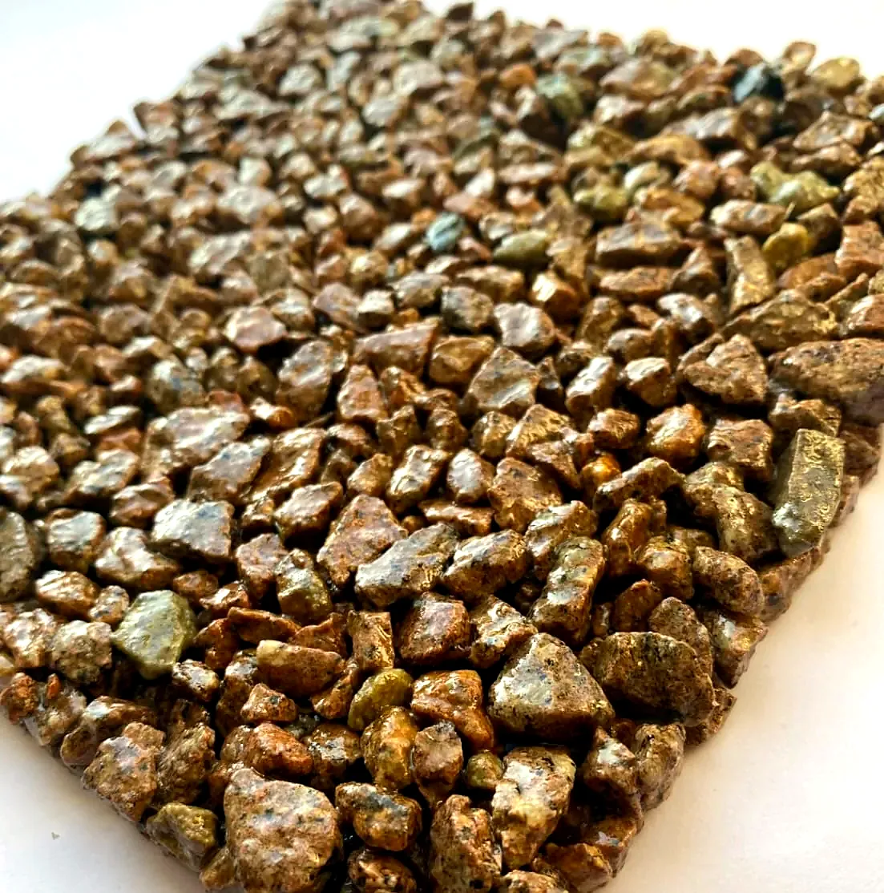
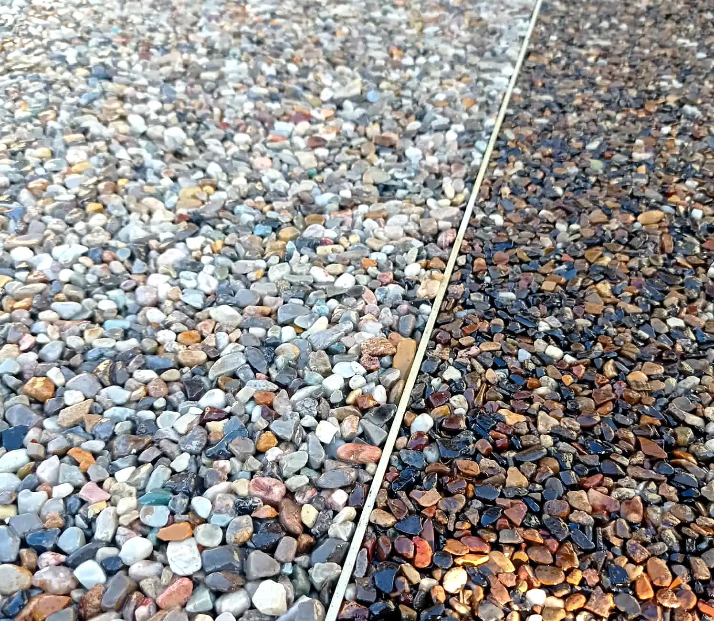
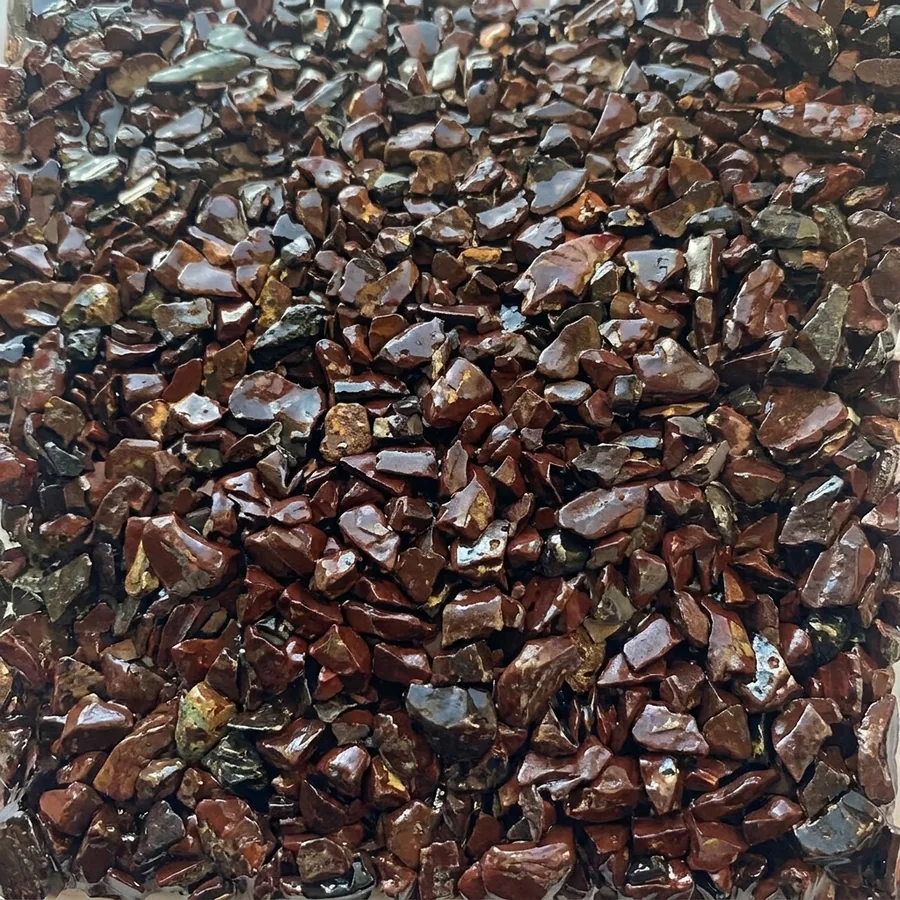
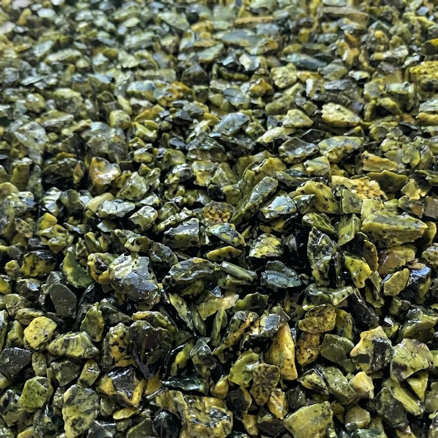

ОренбургБиоСтрой56 · Оренбург
Мытая крошка для каменного ковра и ландшафтного дизайна
Производим декоративную каменную крошку: сортировка по фракциям, механическая промывка, сушка и упаковка. Продаём оптом и в розницу.
Смотреть продукциюПродукция
Три вида продукции
Крошка для каменного ковра: 18 образцов из мрамора, яшмы, змеевика, фельзита, гранита, златолита и речной гальки. Крошка для ландшафта: фракции 3-5, 5-10, 10-20, 20-40 и 40-70 мм. Декоративная панель 1200×600 мм: 14 цветов.
Все образцы
Каменный ковёр
Покрытие пола внутри помещений и на придомовой территории
Основа каменного ковра — минеральные частицы разной формы, размера и цвета, смешанные с полимерным связующим. Слои: натуральный камень, эпоксидное связующее, грунтовка и любое твёрдое основание (щебень, отсев, бетон).
Подробнее

Ландшафт
Крошка для благоустройства территории
Фракции 3-5, 5-10, 10-20, 20-40 и 40-70 мм. В прайсе 14 камней: златолит, змеевик, яшма, фельзит, доломит, диабаз, мрамор белый, гранит розовый, речная галька и другие. Крошку используют для отсыпки дорожек, габионов, засыпки цветов в горшках и оформления территории.
Смотреть фракции
Дорожки и подъезды
Каменный ковёр для дорожек и подъезда к дому
Патио
Патио и площадки отдыха в цвете камня

Террасы
Ровное каменное покрытие террас

Вокруг бассейна
Светлый каменный ковёр у воды

Садовые дорожки
Дорожки между клумбами и газонами

Дворы
Дворы, крыльцо и площадки у входа

Детские площадки
Зоны вокруг игрового оборудования

Гостиницы и базы отдыха
Холлы, веранды и зоны отдыха

Приствольные круги и озеленение
Отсыпка клумб, вазонов и габионов

Производство
Мы сами производим крошку
Грохот — сортировка по фракциям. Механическая промывка. Сушка. Упаковка в мешки 10 кг и 20 кг или в мягкий контейнер (биг-бэг, МКР) 1 т.
О производстве

Декоративная панель
Панель 1200×600 мм для утепления и отделки дома
Экструдированный пенополистирол, покрытый натуральным камнем на эпоксидном связующем. Площадь панели 0,7 м². Толщина 5 мм для камня 3-5 и 10 мм для камня 5-10. Панель лёгкая в монтаже. Всего 14 цветов.
Смотреть панелиМытая крошкаГрохот, промывка, сушка
18 образцовДля каменного ковра
Опт и розницаМешки 10 и 20 кг, биг-бэг 1 т